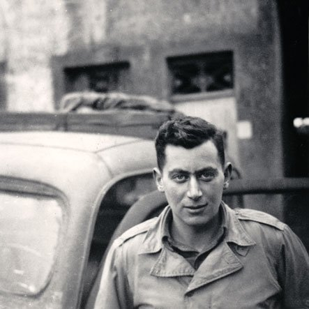
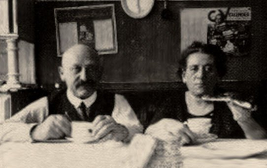

AMERICA AND THE HOLOCAUST: DECEIT AND INDIFFERENCE
A
90-minute historical documentary produced for PBS' The American Experience, exploring
America's
social and political response to the events leading up to and through the Holocaust.
America and the Holocaust paints a troubling picture of the United States during
a period
beset by anti-Semitism and a government that not only delayed action but suppressed information
and blocked efforts that could have resulted in the rescue of thousands of people. An
examination of these factors is framed by the moving story of Kurt Klein, a 17-year-old German
Jew who immigrated to America and struggled against a wall of domestic bureaucracy to free his
parents from Europe.
Winner of the Writers Guild of America Award for Outstanding Non-Current Events
Documentary of
1994, the film has also received a CINE Golden Eagle and a national Emmy nomination.
Across the nation, America and the Holocaust has become a staple component in many secondary schools' curricula on Holocaust education and the teaching of tolerance.
Selected Reviews for
AMERICA AND THE HOLOCAUST: DECEIT AND INDIFFERENCE
“The American self-image of ethical uprightness in the face of Nazi terror during World War II has remained an unexamined myth of the national life. But the myth is broken, if not shattered, by Martin Ostrow's devastating 90-minute film for PBS' 'The American Experience,' ‘America and the Holocaust: Deceit and Indifference.’”
With a mass of paperwork and eyewitness testimony to back it up, Ostrow's work explains how the U.S. government deliberately prevented the immigration of millions of Jews trying to flee Nazi-occupied Europe. And the blame falls right into the lap of President Franklin D. Roosevelt.
Yet Ostrow's superbly constructed history, lucidly narrated by Hal Linden and based largely on scholar David S. Wyman's decades-long research, is not merely a critique of U.S. war-era policy. It reveals an America shot through with deep anti-Semitic sentiments, and recounts the tragic tale of Jewish refugee Kurt Klein's family. As Klein's running narrative is intercut with the political scandal in the halls of Washington, 'America and the Holocaust' sharply demonstrates how bureaucratic decisions carry personal and moral consequences.
Klein's story finally ends with a mixture of bittersweetness and tragedy that ranks with the most moving chapters in Holocaust history.
– Robert Koehler, Los Angeles Times
“Since the end of World War II, evidence has accumulated that before and during the war the State Department was in effect a pioneer in Holocaust revisionism. Tonight's troubling documentary - 'America and the Holocaust: Deceit and Indifference' - adds the power of pictures and first-hand testimony to accusations that Washington played down the known facts of Nazi persecution of Jews as a matter of policy and prejudice.
This 90-minute offering in 'The American Experience' series brings home the effects of the official policy through the experience of Kurt Klein, who came to the United States in 1937 as a 17-year-old refugee from Germany, leaving his parents behind, temporarily, they hoped. As the narrator recalls the growing threat to European Jewry, from Kristallnacht in November 1938 to the death camps of the 1940's, Mr. Klein tells how his parents' efforts to flee to America were repeatedly blocked by State Department functionaries. The pictures of Jews being rounded up and herded to camps, no less painful for their familiarity, make a grim counterpoint to the fate of one family.
'America and the Holocaust' traces the Government's apparent indifference to the anti-Semitism of the 1920's and 30's, with the German-American Bund, the Rev. Charles Coughlin and nativist politicians leading the way. A former Treasury Department official says State Department professionals also shrugged off the plight of the refugees in deference to America's perceived economic and political interests in the Middle East. The record may stir uncomfortable thoughts about current American behavior toward refugees from despotism.
A particular villain of this account is Assistant Secretary of State Breckenridge Long, who is blamed for exaggerating security concerns in order to keep refugees out. His technique is revealed by a memorandum he wrote in 1940: 'We can delay and effectively stop for a temporary period of indefinite length the number of immigrants into the United States. We could do this by simply advising our consuls to put every obstacle in the way, which would postpone and postpone and postpone the granting of the visas.’”
– Walter Goodman, The New York Times
“Given the events in Kosovo, Martin Ostrow's 'America and the Holocaust: Deceit and Indifference' seems particularly relevant these days, but of course this shameful story of American anti-Semitism and international indifference toward rescuing Europe's imperiled Jews is a tale that bears repeating regardless.
Fate of 6 million is told through the story of two, the stranded German Jewish parents of teenage refugee Kurt Klein. By 1937, Kurt and his brother and sister are in America, working to get their parents here, too. But anti-Semitism, anti-immigrant sentiments, Middle East oil politics, State Department denials and purposeful bureaucratic delays foretell no family reunion.
Filmmaker Ostrow employs a deft hand with this unnerving subject. He shows how Allied heavy bombers attacked an I.G. Farben fuel factory five miles from Auschwitz but never received orders to bomb the death camp. (Grainy black-and-white footage shot from a bomber show how its ordnance literally flew over Auschwitz on its way to the Farben plant.)
This film makes very effective use of freeze frame. The bomber's view of the barracks gives viewers a rare glimpse of the camp from the sky, rather than the usual ground-based photos. Equally disturbing is the freeze frame of President Franklin Roosevelt's handwriting on a note, requesting his position on the much-debated 1939 congressional bill to rescue 20,000 German and Austrian Jewish children: 'File, no action. FDR.' Footage then cuts to 1940, and a ship of singing English children arriving here under government protection.
When Congress, the State Department and Roosevelt failed those 20,000 despite confirmed reports that their co-religionists were being massacred, American Jews appealed directly to fellow citizens. The 1943 wartime pageant 'We Shall Never Die' featured actress Sylvia Sydney proclaiming, 'Here the Germans turned machine guns on us and killed us all. Remember us.'
It was... a small but determined team of Treasury Department staffers who, in 1944, pushed Roosevelt into creating the War Refugee Board, which helped save about 200,000 Jews and assisted Swedish diplomat Raoul Wallenberg rescue thousands of Hungarian Jews.
The 90-minute documentary concludes with a too-little-too-late view of wartime America. One historian states that because America refused to rescue thousands of other Jews, the country could not rescue its own conscience.”
– David Finnigan, Variety, 1999